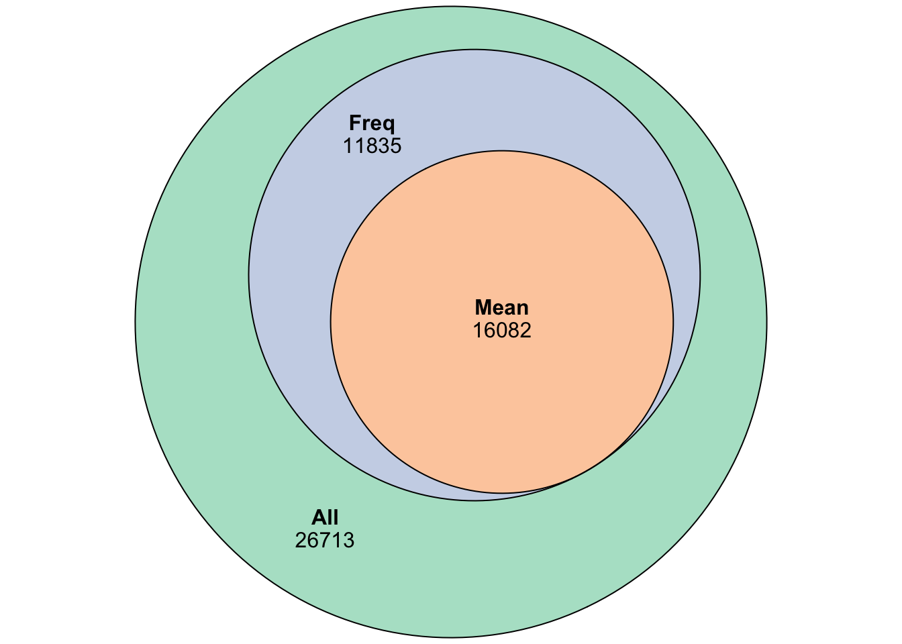

Quality Control
James Ashmore
2019-08-14
Last updated: 2019-09-16
Checks: 6 1
Knit directory: EHF/
This reproducible R Markdown analysis was created with workflowr (version 1.4.0). The Checks tab describes the reproducibility checks that were applied when the results were created. The Past versions tab lists the development history.
The R Markdown is untracked by Git. To know which version of the R Markdown file created these results, you’ll want to first commit it to the Git repo. If you’re still working on the analysis, you can ignore this warning. When you’re finished, you can run wflow_publish to commit the R Markdown file and build the HTML.
Great job! The global environment was empty. Objects defined in the global environment can affect the analysis in your R Markdown file in unknown ways. For reproduciblity it’s best to always run the code in an empty environment.
The command set.seed(20190915) was run prior to running the code in the R Markdown file. Setting a seed ensures that any results that rely on randomness, e.g. subsampling or permutations, are reproducible.
Great job! Recording the operating system, R version, and package versions is critical for reproducibility.
Nice! There were no cached chunks for this analysis, so you can be confident that you successfully produced the results during this run.
Great job! Using relative paths to the files within your workflowr project makes it easier to run your code on other machines.
Great! You are using Git for version control. Tracking code development and connecting the code version to the results is critical for reproducibility. The version displayed above was the version of the Git repository at the time these results were generated.
Note that you need to be careful to ensure that all relevant files for the analysis have been committed to Git prior to generating the results (you can use wflow_publish or wflow_git_commit). workflowr only checks the R Markdown file, but you know if there are other scripts or data files that it depends on. Below is the status of the Git repository when the results were generated:
Ignored files:
Ignored: .DS_Store
Ignored: .Rhistory
Ignored: .Rproj.user/
Ignored: analysis/cache/
Untracked files:
Untracked: analysis/annotation.Rmd
Untracked: analysis/clustering.Rmd
Untracked: analysis/dimension.Rmd
Untracked: analysis/feature.Rmd
Untracked: analysis/integration.Rmd
Untracked: analysis/interactive.Rmd
Untracked: analysis/markers.Rmd
Untracked: analysis/normalization.Rmd
Untracked: analysis/quality.Rmd
Untracked: analysis/trajectory.Rmd
Untracked: data/import.Rds
Untracked: data/quality.Rds
Untracked: docs/figure/
Note that any generated files, e.g. HTML, png, CSS, etc., are not included in this status report because it is ok for generated content to have uncommitted changes.
There are no past versions. Publish this analysis with wflow_publish() to start tracking its development.
Introduction
In this document we are going to perform quality control on the cells.
Setup
Set chunk options:
knitr::opts_chunk$set(
autodep = TRUE,
cache = TRUE,
cache.path = "cache/quality",
dev = "png",
error = FALSE,
message = FALSE,
warning = FALSE
)Load required packages:
pacman::p_load(
devtools,
eulerr,
ggrepel,
here,
patchwork,
readr,
scales,
scater,
scran
)Read experiment data:
sce <- read_rds(here("data/import.Rds"))Exploration
We begin by exploring the dataset which contains 96 cells and 54630 genes.
Metrics
Compute QC metrics for each cell:
mit <- which(seqnames(sce) == "MT")
gfp <- which(seqnames(sce) == "EGFP")
sce <- calculateQCMetrics(sce, feature_controls = list(MT = mit, EGFP = gfp))Inspect the distributions of QC metrics:
patchwork::wrap_plots(
plotColData(sce, "log10_total_counts"),
plotColData(sce, "log10_total_features_by_counts"),
plotColData(sce, "pct_counts_ERCC"),
plotColData(sce, "pct_counts_MT")
)
Dimensionality reduction
Calculate dimenionality reduction data:
set.seed(1701)
sizeFactors(sce) <- librarySizeFactors(sce)
sce <- logNormCounts(sce)
sce <- runPCA(sce)
sce <- runTSNE(sce)
sce <- runUMAP(sce)Inspect dimensionality reduction plots:
PCA
patchwork::wrap_plots(
plotPCA(sce, colour_by = "log10_total_counts"),
plotPCA(sce, colour_by = "log10_total_features_by_counts"),
plotPCA(sce, colour_by = "pct_counts_ERCC"),
plotPCA(sce, colour_by = "pct_counts_MT"),
ncol = 2
)TSNE
patchwork::wrap_plots(
plotTSNE(sce, colour_by = "log10_total_counts"),
plotTSNE(sce, colour_by = "log10_total_features_by_counts"),
plotTSNE(sce, colour_by = "pct_counts_ERCC"),
plotTSNE(sce, colour_by = "pct_counts_MT"),
ncol = 2
)UMAP
patchwork::wrap_plots(
plotUMAP(sce, colour_by = "log10_total_counts"),
plotUMAP(sce, colour_by = "log10_total_features_by_counts"),
plotUMAP(sce, colour_by = "pct_counts_ERCC"),
plotUMAP(sce, colour_by = "pct_counts_MT"),
ncol = 2
)Cell Filtering
We will now perform filtering to remove low-quality cells:
Manual threshold
The first approach to identifying low-quality cells is to apply manual thresholds on the QC metrics:
qc1 <- sce$log10_total_counts < 5
qc2 <- sce$log10_total_features_by_counts < 3
qc3 <- sce$pct_counts_ERCC > 20
qc4 <- sce$pct_counts_MT > 20
sce$manual <- !(qc1 | qc2 | qc3 | qc4)Inspect distribution of QC metrics:
patchwork::wrap_plots(
plotColData(sce, "log10_total_counts", colour_by = "manual"),
plotColData(sce, "log10_total_features_by_counts", colour_by = "manual"),
plotColData(sce, "pct_counts_MT", colour_by = "manual"),
plotColData(sce, "pct_counts_ERCC", colour_by = "manual"),
ncol = 2
)Inspect dimensionality reduction plots:
PCA
patchwork::wrap_plots(
plotPCA(sce, colour_by = "manual"),
plotPCA(sce, colour_by = "log10_total_counts"),
plotPCA(sce, colour_by = "log10_total_features_by_counts"),
plotPCA(sce, colour_by = "pct_counts_ERCC"),
plotPCA(sce, colour_by = "pct_counts_MT"),
ncol = 2
)TSNE
patchwork::wrap_plots(
plotTSNE(sce, colour_by = "manual"),
plotTSNE(sce, colour_by = "log10_total_counts"),
plotTSNE(sce, colour_by = "log10_total_features_by_counts"),
plotTSNE(sce, colour_by = "pct_counts_ERCC"),
plotTSNE(sce, colour_by = "pct_counts_MT"),
ncol = 2
)UMAP
patchwork::wrap_plots(
plotUMAP(sce, colour_by = "manual"),
plotUMAP(sce, colour_by = "log10_total_counts"),
plotUMAP(sce, colour_by = "log10_total_features_by_counts"),
plotUMAP(sce, colour_by = "pct_counts_ERCC"),
plotUMAP(sce, colour_by = "pct_counts_MT"),
ncol = 2
)Adaptive threshold
The next approach is to identify cells that are outliers based on the median absolute deviation for the QC metrics:
qc1 <- isOutlier(sce$log10_total_counts, nmads = 3, type = "lower")
qc2 <- isOutlier(sce$log10_total_features_by_counts, nmads = 3, type = "lower")
qc3 <- isOutlier(sce$pct_counts_ERCC, nmads = 3, type = "higher")
qc4 <- isOutlier(sce$pct_counts_MT, nmads = 3, type = "higher")
sce$adaptive <- !(qc1 | qc2 | qc3 | qc4)Inspect distribution of QC metrics:
patchwork::wrap_plots(
plotColData(sce, "log10_total_counts", colour_by = "adaptive"),
plotColData(sce, "log10_total_features_by_counts", colour_by = "adaptive"),
plotColData(sce, "pct_counts_MT", colour_by = "adaptive"),
plotColData(sce, "pct_counts_ERCC", colour_by = "adaptive"),
ncol = 2
)
Inspect dimensionality reduction plots:
PCA
patchwork::wrap_plots(
plotPCA(sce, colour_by = "adaptive"),
plotPCA(sce, colour_by = "log10_total_counts"),
plotPCA(sce, colour_by = "log10_total_features_by_counts"),
plotPCA(sce, colour_by = "pct_counts_ERCC"),
plotPCA(sce, colour_by = "pct_counts_MT"),
ncol = 2
)TSNE
patchwork::wrap_plots(
plotTSNE(sce, colour_by = "adaptive"),
plotTSNE(sce, colour_by = "log10_total_counts"),
plotTSNE(sce, colour_by = "log10_total_features_by_counts"),
plotTSNE(sce, colour_by = "pct_counts_ERCC"),
plotTSNE(sce, colour_by = "pct_counts_MT"),
ncol = 2
)UMAP
patchwork::wrap_plots(
plotUMAP(sce, colour_by = "adaptive"),
plotUMAP(sce, colour_by = "log10_total_counts"),
plotUMAP(sce, colour_by = "log10_total_features_by_counts"),
plotUMAP(sce, colour_by = "pct_counts_ERCC"),
plotUMAP(sce, colour_by = "pct_counts_MT"),
ncol = 2
)Outlier threshold
The last approach is to perform a PCA on the QC metrics for each cell:
run <- runColDataPCA(sce, outliers = TRUE, variables = c("log10_total_counts", "log10_total_features_by_counts", "pct_counts_ERCC", "pct_counts_MT"))
sce$outlier <- !run$outlierInspect distribution of QC metrics:
patchwork::wrap_plots(
plotColData(sce, "log10_total_counts", colour_by = "outlier"),
plotColData(sce, "log10_total_features_by_counts", colour_by = "outlier"),
plotColData(sce, "pct_counts_MT", colour_by = "outlier"),
plotColData(sce, "pct_counts_ERCC", colour_by = "outlier"),
ncol = 2
)Inspect dimensionality reduction plots:
PCA
patchwork::wrap_plots(
plotPCA(sce, colour_by = "outlier"),
plotPCA(sce, colour_by = "log10_total_counts"),
plotPCA(sce, colour_by = "log10_total_features_by_counts"),
plotPCA(sce, colour_by = "pct_counts_ERCC"),
plotPCA(sce, colour_by = "pct_counts_MT"),
ncol = 2
)TSNE
patchwork::wrap_plots(
plotTSNE(sce, colour_by = "outlier"),
plotTSNE(sce, colour_by = "log10_total_counts"),
plotTSNE(sce, colour_by = "log10_total_features_by_counts"),
plotTSNE(sce, colour_by = "pct_counts_ERCC"),
plotTSNE(sce, colour_by = "pct_counts_MT"),
ncol = 2
)UMAP
patchwork::wrap_plots(
plotUMAP(sce, colour_by = "outlier"),
plotUMAP(sce, colour_by = "log10_total_counts"),
plotUMAP(sce, colour_by = "log10_total_features_by_counts"),
plotUMAP(sce, colour_by = "pct_counts_ERCC"),
plotUMAP(sce, colour_by = "pct_counts_MT"),
ncol = 2
)Comparison
Compare the number of cells selected between methods using an Euler diagram:
mat <- cbind(All = TRUE, Manual = sce$manual, Adaptive = sce$adaptive, PCA = sce$outlier)
fit <- euler(mat, shape = "circle")
col <- RColorBrewer::brewer.pal(n = 4, name = "Pastel2")
plot(fit, fill = col, quantities = TRUE)Selection
We are going to use the manual filtering as it is easier to interpret and adjust:
sce <- sce[, sce$adaptive]Cell cycle
Classify cells into their cell cycle phase based on gene expression data:
con <- system.file("exdata", "mouse_cycle_markers.rds", package = "scran")
ext <- read_rds(con)
res <- cyclone(sce, ext, gene.names = rowData(sce)$gene_id)
colData(sce) <- cbind(colData(sce), phase = res$phases, res$normalized.scores)Tabulate cell cycle phases:
knitr::kable(table(sce$phase), col.names = c("Phase", "Frequency"))| Phase | Frequency |
|---|---|
| G1 | 46 |
| G2M | 5 |
| S | 31 |
Plot G2/M score against the G1 score for each cell:
plotColData(sce, "G1", "G2M", colour_by = "phase")Gene filtering
Compute QC metrics for each gene:
qc <- perFeatureQCMetrics(sce)
df <- as.data.frame(qc)Low abundance
Plot the distribution of log-means across all genes:
ggplot(df, aes(mean)) +
geom_histogram(bins = 100, colour = "black", fill = "grey") +
scale_x_log10(labels = comma) +
theme_bw()Define low abundance genes using a log-means threshold:
df$abundance <- df$mean > 1Tabulate the number of low abundance genes:
knitr::kable(table(df$abundance), col.names = c("Keep", "Frequency"))| Keep | Frequency |
|---|---|
| FALSE | 38548 |
| TRUE | 16082 |
Low frequency
Plot the percentange of expressing cells against the log-mean expression for each gene:
ggplot(df, aes(mean, detected)) +
geom_point(alpha = 0.1, colour = "grey") +
geom_smooth(colour = "black", se = FALSE) +
scale_x_log10(labels = comma) +
theme_bw()Define low frequency genes as having a minimum of 1 read in at least 1 percent of cells:
df$frequency <- rowSums(counts(sce) >= 1) >= (ncol(sce) * 0.01)Tabulate the number of low frequency genes:
knitr::kable(table(df$frequency), col.names = c("Keep", "Frequency"))| Keep | Frequency |
|---|---|
| FALSE | 26713 |
| TRUE | 27917 |
Comparison
Compare the number of genes selected between methods using an Euler diagram:
mat <- cbind(All = TRUE, Mean = df$abundance, Freq = df$frequency)
fit <- euler(mat, shape = "circle")
col <- RColorBrewer::brewer.pal(n = 3, name = "Pastel2")
plot(fit, fill = col, quantities = TRUE)
Filter
We are going to use the frequency-based filter as it tends to be less aggressive:
sce <- sce[df$frequency, ]Summary
After quality control we have a dataset with 82 cells and 27917 genes.
Output
write_rds(sce, here("data/quality.Rds"))Session
Print version information:
session_info()─ Session info ──────────────────────────────────────────────────────────
setting value
version R version 3.6.1 (2019-07-05)
os macOS Mojave 10.14.6
system x86_64, darwin15.6.0
ui X11
language (EN)
collate en_GB.UTF-8
ctype en_GB.UTF-8
tz Europe/London
date 2019-09-16
─ Packages ──────────────────────────────────────────────────────────────
package * version date lib
assertthat 0.2.1 2019-03-21 [1]
backports 1.1.4 2019-04-10 [1]
beeswarm 0.2.3 2016-04-25 [1]
Biobase * 2.45.1 2019-09-04 [1]
BiocGenerics * 0.31.5 2019-07-03 [1]
BiocNeighbors 1.3.4 2019-09-14 [1]
BiocParallel * 1.19.2 2019-08-07 [1]
BiocSingular 1.1.5 2019-07-07 [1]
bitops 1.0-6 2013-08-17 [1]
callr 3.3.1 2019-07-18 [1]
cli 1.1.0 2019-03-19 [1]
codetools 0.2-16 2018-12-24 [1]
colorspace 1.4-1 2019-03-18 [1]
cowplot 1.0.0 2019-07-11 [1]
crayon 1.3.4 2017-09-16 [1]
DelayedArray * 0.11.4 2019-07-03 [1]
DelayedMatrixStats 1.7.2 2019-09-08 [1]
DEoptimR 1.0-8 2016-11-19 [1]
desc 1.2.0 2018-05-01 [1]
devtools * 2.2.0 2019-09-07 [1]
digest 0.6.20 2019-07-04 [1]
dplyr 0.8.3 2019-07-04 [1]
dqrng 0.2.1 2019-05-17 [1]
DT 0.8 2019-08-07 [1]
edgeR 3.27.13 2019-09-01 [1]
ellipsis 0.2.0.1 2019-07-02 [1]
eulerr * 5.1.0 2019-02-04 [1]
evaluate 0.14 2019-05-28 [1]
FNN 1.1.3 2019-02-15 [1]
fs 1.3.1 2019-05-06 [1]
GenomeInfoDb * 1.21.1 2019-05-16 [1]
GenomeInfoDbData 1.2.1 2019-05-24 [1]
GenomicRanges * 1.37.16 2019-09-13 [1]
ggbeeswarm 0.6.0 2017-08-07 [1]
ggplot2 * 3.2.1 2019-08-10 [1]
ggrepel * 0.8.1 2019-05-07 [1]
git2r 0.26.1 2019-06-29 [1]
glue 1.3.1 2019-03-12 [1]
gridExtra 2.3 2017-09-09 [1]
gtable 0.3.0 2019-03-25 [1]
here * 0.1 2017-05-28 [1]
highr 0.8 2019-03-20 [1]
hms 0.5.1 2019-08-23 [1]
htmltools 0.3.6 2017-04-28 [1]
htmlwidgets 1.3 2018-09-30 [1]
igraph 1.2.4.1 2019-04-22 [1]
IRanges * 2.19.16 2019-09-13 [1]
irlba 2.3.3 2019-02-05 [1]
knitr 1.24 2019-08-08 [1]
labeling 0.3 2014-08-23 [1]
lattice 0.20-38 2018-11-04 [1]
lazyeval 0.2.2 2019-03-15 [1]
limma 3.41.16 2019-09-09 [1]
locfit 1.5-9.1 2013-04-20 [1]
magrittr 1.5 2014-11-22 [1]
Matrix 1.2-17 2019-03-22 [1]
matrixStats * 0.55.0 2019-09-07 [1]
memoise 1.1.0 2017-04-21 [1]
mgcv 1.8-28 2019-03-21 [1]
munsell 0.5.0 2018-06-12 [1]
nlme 3.1-141 2019-08-01 [1]
pacman 0.5.1 2019-03-11 [1]
patchwork * 0.0.1 2019-06-02 [1]
pillar 1.4.2 2019-06-29 [1]
pkgbuild 1.0.5 2019-08-26 [1]
pkgconfig 2.0.2 2018-08-16 [1]
pkgload 1.0.2 2018-10-29 [1]
polyclip 1.10-0 2019-03-14 [1]
polylabelr 0.1.0 2018-11-02 [1]
prettyunits 1.0.2 2015-07-13 [1]
processx 3.4.1 2019-07-18 [1]
ps 1.3.0 2018-12-21 [1]
purrr 0.3.2 2019-03-15 [1]
R6 2.4.0 2019-02-14 [1]
RColorBrewer 1.1-2 2014-12-07 [1]
Rcpp 1.0.2 2019-07-25 [1]
RcppParallel 4.4.3 2019-05-22 [1]
RCurl 1.95-4.12 2019-03-04 [1]
readr * 1.3.1 2018-12-21 [1]
remotes 2.1.0 2019-06-24 [1]
rlang 0.4.0 2019-06-25 [1]
rmarkdown 1.15 2019-08-21 [1]
robustbase 0.93-5 2019-05-12 [1]
rprojroot 1.3-2 2018-01-03 [1]
RSpectra 0.15-0 2019-06-11 [1]
rsvd 1.0.2 2019-07-29 [1]
Rtsne 0.15 2018-11-10 [1]
S4Vectors * 0.23.23 2019-09-13 [1]
scales * 1.0.0 2018-08-09 [1]
scater * 1.13.18 2019-08-30 [1]
scran * 1.13.18 2019-09-09 [1]
sessioninfo 1.1.1 2018-11-05 [1]
SingleCellExperiment * 1.7.9 2019-09-12 [1]
statmod 1.4.32 2019-05-29 [1]
stringi 1.4.3 2019-03-12 [1]
stringr 1.4.0 2019-02-10 [1]
SummarizedExperiment * 1.15.9 2019-09-11 [1]
testthat 2.2.1 2019-07-25 [1]
tibble 2.1.3 2019-06-06 [1]
tidyselect 0.2.5 2018-10-11 [1]
usethis * 1.5.1 2019-07-04 [1]
uwot 0.1.3 2019-04-07 [1]
vctrs 0.2.0 2019-07-05 [1]
vipor 0.4.5 2017-03-22 [1]
viridis 0.5.1 2018-03-29 [1]
viridisLite 0.3.0 2018-02-01 [1]
withr 2.1.2 2018-03-15 [1]
workflowr 1.4.0 2019-06-08 [1]
xfun 0.9 2019-08-21 [1]
XVector 0.25.0 2019-05-02 [1]
yaml 2.2.0 2018-07-25 [1]
zeallot 0.1.0 2018-01-28 [1]
zlibbioc 1.31.0 2019-05-02 [1]
source
CRAN (R 3.6.0)
CRAN (R 3.6.0)
CRAN (R 3.6.0)
Bioconductor
Bioconductor
Bioconductor
Bioconductor
Bioconductor
CRAN (R 3.6.0)
CRAN (R 3.6.0)
CRAN (R 3.6.0)
CRAN (R 3.6.1)
CRAN (R 3.6.0)
CRAN (R 3.6.0)
CRAN (R 3.6.0)
Bioconductor
Bioconductor
CRAN (R 3.6.0)
CRAN (R 3.6.0)
CRAN (R 3.6.0)
CRAN (R 3.6.0)
CRAN (R 3.6.0)
CRAN (R 3.6.0)
CRAN (R 3.6.0)
Bioconductor
CRAN (R 3.6.0)
CRAN (R 3.6.0)
CRAN (R 3.6.0)
CRAN (R 3.6.0)
CRAN (R 3.6.0)
Bioconductor
Bioconductor
Bioconductor
CRAN (R 3.6.0)
CRAN (R 3.6.0)
CRAN (R 3.6.0)
CRAN (R 3.6.0)
CRAN (R 3.6.0)
CRAN (R 3.6.0)
CRAN (R 3.6.0)
CRAN (R 3.6.0)
CRAN (R 3.6.0)
CRAN (R 3.6.0)
CRAN (R 3.6.0)
CRAN (R 3.6.0)
CRAN (R 3.6.0)
Bioconductor
CRAN (R 3.6.0)
CRAN (R 3.6.0)
CRAN (R 3.6.0)
CRAN (R 3.6.1)
CRAN (R 3.6.0)
Bioconductor
CRAN (R 3.6.0)
CRAN (R 3.6.0)
CRAN (R 3.6.1)
CRAN (R 3.6.0)
CRAN (R 3.6.0)
CRAN (R 3.6.1)
CRAN (R 3.6.0)
CRAN (R 3.6.0)
CRAN (R 3.6.0)
Github (thomasp85/patchwork@fd7958b)
CRAN (R 3.6.0)
CRAN (R 3.6.0)
CRAN (R 3.6.0)
CRAN (R 3.6.0)
CRAN (R 3.6.0)
CRAN (R 3.6.0)
CRAN (R 3.6.0)
CRAN (R 3.6.0)
CRAN (R 3.6.0)
CRAN (R 3.6.0)
CRAN (R 3.6.0)
CRAN (R 3.6.0)
CRAN (R 3.6.0)
CRAN (R 3.6.0)
CRAN (R 3.6.0)
CRAN (R 3.6.0)
CRAN (R 3.6.0)
CRAN (R 3.6.0)
CRAN (R 3.6.0)
CRAN (R 3.6.0)
CRAN (R 3.6.0)
CRAN (R 3.6.0)
CRAN (R 3.6.0)
CRAN (R 3.6.0)
Bioconductor
CRAN (R 3.6.0)
Bioconductor
Bioconductor
CRAN (R 3.6.0)
Bioconductor
CRAN (R 3.6.0)
CRAN (R 3.6.0)
CRAN (R 3.6.0)
Bioconductor
CRAN (R 3.6.0)
CRAN (R 3.6.0)
CRAN (R 3.6.0)
CRAN (R 3.6.0)
CRAN (R 3.6.0)
CRAN (R 3.6.0)
CRAN (R 3.6.0)
CRAN (R 3.6.0)
CRAN (R 3.6.0)
CRAN (R 3.6.0)
CRAN (R 3.6.0)
CRAN (R 3.6.0)
Bioconductor
CRAN (R 3.6.0)
CRAN (R 3.6.0)
Bioconductor
[1] /Library/Frameworks/R.framework/Versions/3.6/Resources/library
sessionInfo()R version 3.6.1 (2019-07-05)
Platform: x86_64-apple-darwin15.6.0 (64-bit)
Running under: macOS Mojave 10.14.6
Matrix products: default
BLAS: /Library/Frameworks/R.framework/Versions/3.6/Resources/lib/libRblas.0.dylib
LAPACK: /Library/Frameworks/R.framework/Versions/3.6/Resources/lib/libRlapack.dylib
locale:
[1] en_GB.UTF-8/en_GB.UTF-8/en_GB.UTF-8/C/en_GB.UTF-8/en_GB.UTF-8
attached base packages:
[1] parallel stats4 stats graphics grDevices utils datasets
[8] methods base
other attached packages:
[1] scran_1.13.18 scater_1.13.18
[3] SingleCellExperiment_1.7.9 SummarizedExperiment_1.15.9
[5] DelayedArray_0.11.4 BiocParallel_1.19.2
[7] matrixStats_0.55.0 Biobase_2.45.1
[9] GenomicRanges_1.37.16 GenomeInfoDb_1.21.1
[11] IRanges_2.19.16 S4Vectors_0.23.23
[13] BiocGenerics_0.31.5 scales_1.0.0
[15] readr_1.3.1 patchwork_0.0.1
[17] here_0.1 ggrepel_0.8.1
[19] ggplot2_3.2.1 eulerr_5.1.0
[21] devtools_2.2.0 usethis_1.5.1
loaded via a namespace (and not attached):
[1] Rtsne_0.15 ggbeeswarm_0.6.0
[3] colorspace_1.4-1 ellipsis_0.2.0.1
[5] rprojroot_1.3-2 XVector_0.25.0
[7] BiocNeighbors_1.3.4 fs_1.3.1
[9] remotes_2.1.0 DT_0.8
[11] RSpectra_0.15-0 splines_3.6.1
[13] codetools_0.2-16 robustbase_0.93-5
[15] knitr_1.24 polyclip_1.10-0
[17] pkgload_1.0.2 zeallot_0.1.0
[19] workflowr_1.4.0 uwot_0.1.3
[21] compiler_3.6.1 dqrng_0.2.1
[23] backports_1.1.4 assertthat_0.2.1
[25] Matrix_1.2-17 lazyeval_0.2.2
[27] limma_3.41.16 cli_1.1.0
[29] BiocSingular_1.1.5 htmltools_0.3.6
[31] prettyunits_1.0.2 tools_3.6.1
[33] rsvd_1.0.2 igraph_1.2.4.1
[35] gtable_0.3.0 glue_1.3.1
[37] GenomeInfoDbData_1.2.1 dplyr_0.8.3
[39] Rcpp_1.0.2 vctrs_0.2.0
[41] nlme_3.1-141 DelayedMatrixStats_1.7.2
[43] xfun_0.9 polylabelr_0.1.0
[45] stringr_1.4.0 ps_1.3.0
[47] testthat_2.2.1 irlba_2.3.3
[49] pacman_0.5.1 statmod_1.4.32
[51] edgeR_3.27.13 DEoptimR_1.0-8
[53] zlibbioc_1.31.0 hms_0.5.1
[55] RColorBrewer_1.1-2 yaml_2.2.0
[57] memoise_1.1.0 gridExtra_2.3
[59] stringi_1.4.3 highr_0.8
[61] desc_1.2.0 pkgbuild_1.0.5
[63] rlang_0.4.0 pkgconfig_2.0.2
[65] bitops_1.0-6 evaluate_0.14
[67] lattice_0.20-38 purrr_0.3.2
[69] htmlwidgets_1.3 labeling_0.3
[71] cowplot_1.0.0 processx_3.4.1
[73] tidyselect_0.2.5 magrittr_1.5
[75] R6_2.4.0 pillar_1.4.2
[77] withr_2.1.2 mgcv_1.8-28
[79] RCurl_1.95-4.12 tibble_2.1.3
[81] crayon_1.3.4 rmarkdown_1.15
[83] viridis_0.5.1 locfit_1.5-9.1
[85] grid_3.6.1 FNN_1.1.3
[87] callr_3.3.1 git2r_0.26.1
[89] digest_0.6.20 RcppParallel_4.4.3
[91] munsell_0.5.0 beeswarm_0.2.3
[93] viridisLite_0.3.0 vipor_0.4.5
[95] sessioninfo_1.1.1